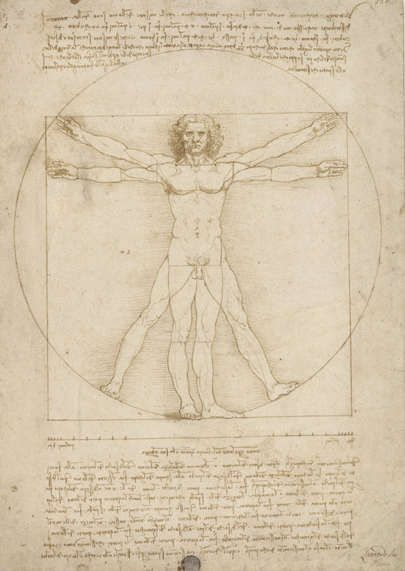
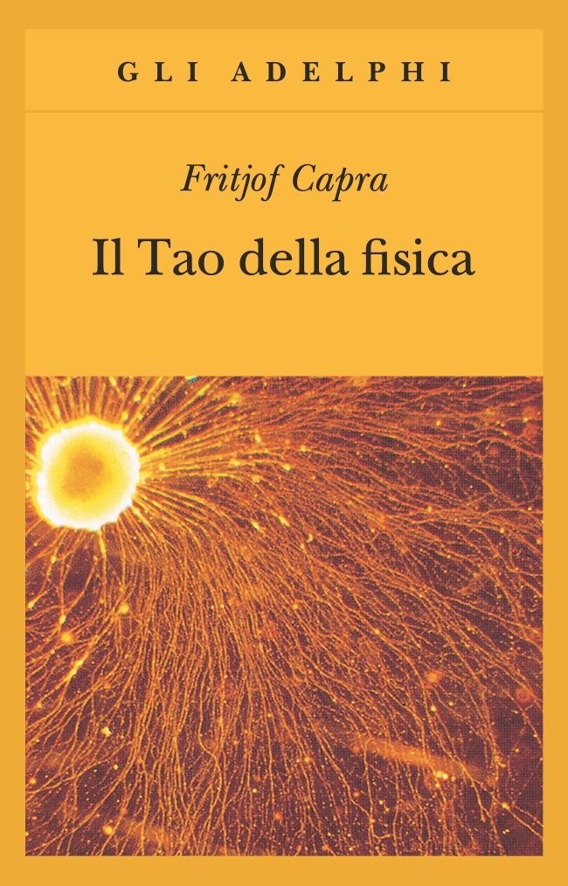

33:52 · 4 OPERE
Visioni del mondo e approssimazioni sull'universo.
Il filo del discorso
Una visione del mondo, sostiene Dr Divago, serve a orientarsi nella varietà dei fenomeni senza perdersi nei particolari. Alla lavagna propone un modello ovale che collega il mondo subatomico alle strutture biologiche e al cosmo, usando l’essere umano come punto di osservazione ma rifiutando di considerarlo il fine dell’universo. Il richiamo a Leonardo e alla canna pensante di Pascal distingue la fragilità materiale dalla capacità di riflettere e di riconoscere il bello. Il percorso passa poi attraverso movimento, forza, lavoro, energia e informazione: queste categorie sono presentate come modi differenti di organizzare la conoscenza. Nella seconda parte, la domanda di Agostino sul tempo introduce una discussione sull’origine cosmica, sugli orologi e sull’entropia. Dr Divago usa il mescolarsi di caffè e latte per illustrare l’irreversibilità e immagina un lontano esaurimento delle strutture materiali, accostandolo alla danza di Śiva ricordata da Capra. La conclusione interpreta vita e morte attraverso ordine e perdita di organizzazione. Questa è una proposta filosofica costruita con immagini scientifiche: la scheda distingue il suo valore orientativo dalle affermazioni fisiche inesatte o speculative, fra cui l’energia totale necessariamente nulla, l’inesistenza del tempo e una data certa per il decadimento dei protoni.
I libri nel discorso

Studio di proporzioni del corpo noto come Uomo vitruviano
Riproduzione del disegno: RIPRODUZIONE DEL DISEGNO conservato alle Gallerie dell’Accademia di Venezia, inventario 228, punta metallica, penna e inchiostro, tocchi di acquerello su carta. Foglio intero con figura nelle due posizioni, cerchio, quadrato e annotazioni. Non è una copertina libraria. La scheda colloca l’opera nel soggiorno milanese; la mostra del 2019 la accosta agli studi intorno al 1490. La scheda della mostra 2025 propone una data differente: non si forza una datazione unica.
Riproduzione integrale del foglio nel catalogo del museo, senza il ritaglio e le scritte del banner della mostra. Nessun libro attribuito a Leonardo da questo riferimento.
Uomo vitruviano e Leonardo espliciti; richiamo al disegno, non a un volume.
Passaggio 6:32 ↗ · Fonti e libro ↗
Pensieri
Identificazione probabile
Copertina: UTET · a cura di Bruno Nacci · 2021
Copertina autentica dell’edizione di riferimento, non attribuita all’esemplare del video.
Pascal e la canna pensante: passo riconoscibile dei Pensieri, Brunschvicg 347 / Lafuma 200; titolo della raccolta non pronunciato.
Passaggio 8:04 ↗ · Fonti e libro ↗
Confessioni
Identificazione probabile
Copertina: Città Nuova · 1995
Copertina autentica controllata visivamente. Edizione di riferimento; non identifica l’esemplare usato o citato nel video.
Agostino e domanda latina sul tempo, riconoscibile in Confessioni XI,14,17; titolo non pronunciato.
Passaggio 21:05 ↗ · Fonti e libro ↗
Il Tao della fisica
Copertina: Adelphi, gli Adelphi 4, edizione della collana 1989, 381 pagine, traduzione di Giovanni Salio, ISBN 9788845906893. Copertina gialla con immagine microscopica di un cono di crescita neuronale sotto l’effetto del Nerve Growth Factor, come dichiarato dall’editore. Originale inglese 1975; prima edizione italiana Adelphi nella Biblioteca Scientifica 1982. La ristampa specifica non è attribuita al video.
Immagine autentica dell’opera, controllata visivamente; l’edizione di riferimento non è attribuita al filmato.
Fritjof Capra, titolo Il Tao della fisica e danza di Śiva espliciti.
Passaggio 29:58 ↗ · Fonti e libro ↗